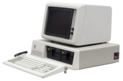
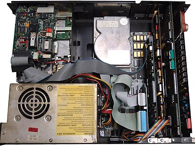
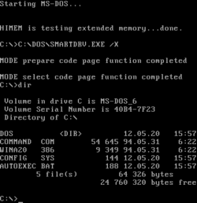
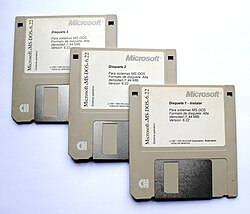
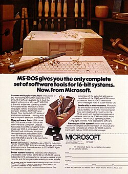
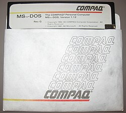
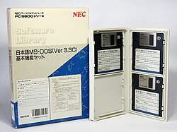
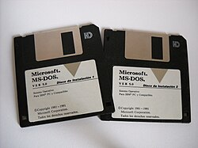

MS-DOS was entirely keyboard-driven. Every action — creating files, managing directories, formatting disks, configuring the system — was accomplished by typing a command at the C:\> prompt and pressing Enter. Knowing these commands wasn't just useful; it was mandatory for anyone who wanted to use a PC in the 1980s and early 1990s. Internal commands were built into COMMAND.COM; external commands lived as .COM or .EXE files in C:\DOS.
Every time a DOS PC booted, it read two critical text files before presenting the prompt: CONFIG.SYS and AUTOEXEC.BAT. Getting these files right was the central challenge of DOS system administration. Too few buffers and disk access was slow. Too many files open and programs crashed. Wrong memory manager settings and you'd lose precious kilobytes. Optimizing these two files was an art form that spawned books, magazine columns, and entire utilities dedicated to helping you squeeze out every last free byte of conventional memory.
| Line | What It Does |
|---|---|
| DEVICE=HIMEM.SYS | Loads the Extended Memory Manager (XMS). Required to access any memory above 1MB. Must be first — every other memory tool depends on it. Enables the High Memory Area (HMA, the first 64KB above 1MB). |
| DEVICE=EMM386.EXE NOEMS | Activates the Upper Memory Block (UMB) manager. NOEMS disables Expanded Memory emulation (EMS), freeing more UMB space for drivers. With this loaded, DEVICEHIGH and LOADHIGH commands work. The crucial enabler of memory optimization. |
| DOS=HIGH,UMS | Tells DOS to load itself into the High Memory Area, freeing ~45KB of conventional memory. UMS enables Upper Memory Block support. Together with EMM386, this was the single most impactful optimization — recovered space that every program competed for. |
| FILES=30 | Maximum number of simultaneously open file handles. Default was 8 — wildly insufficient for any real application. WordPerfect recommended 20–30. Too high wasted conventional memory (each handle cost ~48 bytes in the file table). |
| BUFFERS=10 | Disk sector cache buffers in conventional memory. More buffers = faster disk access but less free RAM. With SMARTDRV loaded from AUTOEXEC.BAT, this could be set low (10) since SMARTDRV provided a superior disk cache. |
| STACKS=0,0 | Disables the hardware interrupt stack frames. Default was STACKS=9,128 which consumed over 1KB. Setting to 0,0 recovered that memory. Safe on most hardware; some older ISA cards required non-zero values. A popular optimization tip. |
| DEVICEHIGH=ANSI.SYS | Loads the ANSI terminal driver into a UMB instead of conventional memory. ANSI.SYS provided ANSI escape code support for colored text and cursor positioning — essential for BBS software and any terminal emulator. Without HIMEM+EMM386+DOS=HIGH, this command was unavailable. |
| Line | What It Does |
|---|---|
| @ECHO OFF | Suppresses the display of each command as it executes. The @ prevents ECHO OFF itself from being displayed. Without this, booting would scroll a wall of commands across the screen. Every clean AUTOEXEC.BAT started with this line. |
| PROMPT $P$G | Sets the command prompt to show the current drive and path followed by >. Default DOS prompt was just C> — not very useful. $P = current path, $G = the > character. The result: C:\GAMES\DOOM> instead of C>. Every power user set this. |
| PATH=C:\DOS;C:\WINDOWS;... | Sets the directories DOS searches for executable files. Without a PATH, you could only run programs in the current directory. With PATH, typing EDIT anywhere found C:\DOS\EDIT.COM. Semicolons separate directories; order matters — first match wins. |
| SET TEMP=C:\TEMP | Tells applications where to write temporary files. Without TEMP set, programs wrote temp files to the current directory or root — cluttering your disk. Pointing it to a dedicated C:\TEMP directory kept things organized. Some apps required TEMP to exist before they'd run. |
| SET BLASTER=... | Sound Blaster environment variable. A220 = port address 220h, I5 = IRQ 5, D1 = DMA channel 1, H5 = High DMA, P330 = MIDI port, T6 = card type (SB16). Games read this to configure audio. Getting these settings wrong meant no sound or system hangs on exit. |
| LH MSCDEX.EXE /D:MSCD001 | Loads the Microsoft CD-ROM Extension into Upper Memory (LH = LoadHigh). Required for CD-ROM access — without it, you had no D: drive. The /D: parameter must match the device driver label in CONFIG.SYS. CD-ROMs were luxury items in the early 1990s. |
| LH SMARTDRV.EXE | Loads the disk cache utility into Upper Memory. SMARTDRV created a RAM cache for disk reads (and optionally writes), dramatically speeding up applications. In write-back mode (dangerous if you powered off without flushing), disk writes were also cached. Essential for Windows 3.1 performance. |
The IBM PC's original designers in 1981 made a fateful decision: the Intel 8088 CPU's 20-bit address bus allowed a maximum of 1 megabyte of addressable memory. Of that 1MB, only the bottom 640KB was available for programs — the rest was reserved for the video display, ROM BIOS, and expansion card firmware. Bill Gates' apocryphal quote "640K ought to be enough for anybody" became one of computing's most famous (misattributed) remarks. Whether he said it or not, it captured exactly what happened: 640K rapidly became desperately insufficient.
Every time you pressed the power button or hit Ctrl+Alt+Del, DOS went through the same precise sequence of steps before presenting the C:\> prompt. Understanding this sequence was essential for troubleshooting — if something went wrong, knowing which step had failed told you exactly where to look. The sequence was elegant in its determinism: the same steps, in the same order, every single time.







